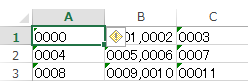

Option Explicit
'windows Script Host Object 参照設定要
Sub 巨大ファイル生成()
Dim wsh As New WshShell
Dim wshEx As WshExec
Dim hugeSize As String
hugeSize = CStr(2 ^ 10 * 2 ^ 10) 'メビバイト (MiB)
'fsutil は上書きできないらしいので a を削除
VBA.Kill ThisWorkbook.Path & "\a"
Set wshEx = _
wsh.Exec("%ComSpec% /c fsutil file createnew " & ThisWorkbook.Path & "\a " & hugeSize)
Do
If wshEx.Status = WshFinished Then
MsgBox "Finished"
Exit Sub
End If
If wshEx.Status = WshFailed Then
MsgBox "Failed"
Exit Sub
End If
Loop
End Sub
'modLogOutput
Option Explicit
'出力文字列にカンマがあってもCSV出力できる
Private mFso As New Scripting.FileSystemObject
Private Const cnsLogFileName As String = "log.csv"
Public Sub OutPutLog(stepPos As String)
Dim outPath As String
Dim IsNew As Boolean
'outPath = CurrentProject.Path & "\" & cnsLogFileName
outPath = ThisWorkbook.Path
Dim lgfl As Scripting.TextStream
If mFso.FileExists(outPath & "\" & cnsLogFileName) = False Then
IsNew = True
Else
IsNew = False
End If
Set lgfl = _
mFso.OpenTextFile(outPath & "\" & _
cnsLogFileName, IOMode:=ForAppending, Create:=True)
'ログファイルがなければ作成してタイトル行を出力する
If IsNew Then
Call WriteTitle(lgfl)
'lgfl.WriteLine ("DayTime,UserID,TimerValue,どの位置で出力されたのか")
End If
'ログファイルが１Mbyte超えたら半年より過去データを削除する
Dim fl As Scripting.File
Set fl = mFso.GetFile(outPath & "\" & cnsLogFileName)
'mebibyte 2^10*2^10:1048576
If fl.Size > 1048576 Then
'一時ファイル名の作成
Dim tmpTxt As String
tmpTxt = getTmpName(cnsLogFileName)
'追記モードで開いているのを閉じる
lgfl.Close
'ado
Dim adoCn As New ADODB.Connection
Dim adoCmd As New ADODB.Command
Dim adoRs As New ADODB.Recordset
With adoCn
.Provider = "Microsoft.ACE.OLEDB.12.0"
.Properties("Extended Properties") = "TEXT"
.Open outPath
End With
'6ヶ月前の1日まではとっておく、より過去のログは削除
' sql = _
' "delete from " & cnsLogFileName'ISAMではリンクテーブルのデータを削除する事はできません
'一時ファイル作成-既にあれば削除
If mFso.FileExists(outPath & "\" & tmpTxt) Then
mFso.DeleteFile outPath & "\" & tmpTxt
End If
'添付ファイル作成
mFso.CreateTextFile outPath & "\" & tmpTxt
Dim ts As Scripting.TextStream
'テキストストリームを取得
Set ts = mFso.OpenTextFile(outPath & "\" & tmpTxt, ForAppending)
'タイトル挿入
Call WriteTitle(ts)
'テキストストリームを閉じる
ts.Close
Dim sql As String
sql = _
" select * from " & cnsLogFileName & _
" where Daytime>= #" & _
DateSerial(Year(Date), Month(Date) - 6, 1) & "#"
sql = "insert into " & tmpTxt & sql
With adoCmd
.ActiveConnection = adoCn
.CommandText = sql
.Execute
End With
End If
'ファイルサイズ超過で作り直した場合
If mFso.FileExists(outPath & "\" & tmpTxt) Then
'元のログファイルを削除
mFso.DeleteFile outPath & "\" & cnsLogFileName
'一時ファイルのファイル名を log.csv にする
Set fl = mFso.GetFile(outPath & "\" & tmpTxt)
fl.Name = cnsLogFileName
Set fl = Nothing
End If
'追記モードで開く
Set lgfl = _
mFso.OpenTextFile(outPath & "\" & _
cnsLogFileName, IOMode:=ForAppending, Create:=True)
lgfl.WriteLine ( _
cnvForCSV(CStr(Now())) & "," & _
cnvForCSV(VBA.Environ$("username")) & "," & _
cnvForCSV(CStr(Timer())) & "," & _
cnvForCSV(stepPos))
lgfl.Close
End Sub
'元のファイル名の先頭に "TMP"を追加します
Private Function getTmpName(orginName As String)
getTmpName = "TMP" & orginName
End Function
'テキストストリームオブジェクトにタイトル行を出力します
Private Sub WriteTitle(ByRef ts As Scripting.TextStream)
ts.WriteLine ("DayTime,UserID,TimerValue,どの位置で出力されたのか")
End Sub
'CSV出力しても値中のカンマが separate text として解釈されないように加工しておく
Private Function cnvForCSV(str As String) As String
Dim rslt As String
rslt = Replace(str, """", """""") '" を "" に置き換える
rslt = """" & rslt & """" '"で囲む
cnvForCSV = rslt
End Function
Private Sub test()
On Error GoTo err_handle
Call OutPutLog("test1")
Dim nw As Date
nw = Now()
Dim releaseTime As Date
Dim waitTime As Double
waitTime = 1 / 60 / 60 / 24 '1秒
releaseTime = nw + waitTime
Do
If releaseTime < Now() Then Exit Do
Loop
Call OutPutLog("test2")
'CSVに出力しようとしている文字列中にカンマがある場合
Call OutPutLog("a,b,c")
'CSVに出力しようとしている文字列中にカンマとダブルクォーテーションがある場合
Call OutPutLog("""a,b,c""")
'CSVに出力しようとしている文字列中にカンマとシングルクォーテーションがある場合
Call OutPutLog("'a,b,c'")
Call OutPutLog("ノート,150,10,これは1,500円でした。")
end_handle:
Exit Sub
err_handle:
MsgBox Err.Description
Resume end_handle
End Sub
'標準モジュール
'■ウィンドウタイトルに含まれる文字列を渡して、ウィンドウを前面表示させる
Option Explicit
'API関数の宣言
'画面上のすべてのトップレベルウィンドウを列挙します
Private Declare Function EnumWindows Lib "user32" (ByVal lpEnumFunc As Long, ByVal lParam As Long) As Long
'lpEnumFunc
' アプリケーション定義のコールバック関数へのポインタを指定します｡詳細については､EnumWindowsProc 関数の説明を参照してください｡
'lParam
' コールバック関数に渡すアプリケーション定義の値を指定します｡
'EnumWindows用に用意したコールバック関数 GetProcHogeから呼ばれます
'ウィンドウのタイトルバーテキスト取得
Private Declare Function GetWindowText Lib "user32" _
Alias "GetWindowTextA" _
(ByVal hWnd As Long, ByVal lpString As String, _
ByVal cch As Long) As Long
'EnumWindows用に用意したコールバック関数 GetProcHogeから呼ばれます
'ウィンドウの可視状態
Private Declare Function IsWindowVisible Lib "user32" (ByVal hWnd As Long) As Long
'EnumWindows用に用意したコールバック関数 GetProcHogeから呼ばれます
'オーナーフォームを指定してハンドル取得
Private Declare Function GetWindow Lib "user32" (ByVal hWnd As Long, ByVal wCmd As Long) As Long
'定数:オーナーフォームチェック用
'Private Const GW_OWNER = 4
Private Const GW_OWNER = 4
Private mWindowCaptions As Collection
'EnumWindowsから呼ばれるコールバック
Public Function GetProcHoge(ByVal hWnd As Long, lParam As Long) As Boolean
Dim MyName As String * 128
Dim ret As Long
MyName = ""
ret = GetWindowText(hWnd, MyName, Len(MyName))
If IsWindowVisible(hWnd) Then
If GetWindow(hWnd, GW_OWNER) = 0 Then
If ret <> 0 Then
mWindowCaptions.Add MyName
End If
End If
End If
'EnumWindows 関数は、すべてのトップレベルリンドウを列挙し終えるか、またはアプリケーション定義のコールバック関数から 0（FALSE）が返されるまで処理を続けます。
'列挙を続行する場合は、0 以外の値（TRUE）を返してください。
'列挙を中止する場合は、0（FALSE）を返してください。
'列挙を続行
GetProcHoge = True
End Function
'ウィンドウkyぷしょんの登録されたコレクションを返す
Private Function winNames() As Collection
'EnumWindows の第一引数にはコールバック関数を用意して
'関数へのポインタを渡す必ようがある。
'関数のポインタを渡す AddressOf演算子。
'コールバックされる関数は標準モジュールに記述されている必要があります。
Set mWindowCaptions = New Collection
Call EnumWindows(AddressOf GetProcHoge, 0)
Set winNames = mWindowCaptions
End Function
'ウィンドウのタイトルバーに含まれる文字列を渡す。
'文字列が含まれるウィンドウが前面表示される。
'同じ文字列を含むウィンドウが複数あれば、どのウィンドウが前面表示されるかの
'保証はない
Public Sub AppActivateEx(strCap As String)
Dim caps As Collection
Set caps = winNames
Dim cap As Variant
For Each cap In caps
'Debug.Print cap
If cap Like "*" & strCap & "*" Then
AppActivate cap
Exit For
End If
Next
End Sub
'tset
Sub test()
Call AppActivateEx("Muse")
End Sub
'■ステップ数を数える
'sheet1
Option Explicit
Private Sub Worksheet_Change(ByVal Target As Range)
On Error GoTo err_handle
If InStr(Target.Address, [a1].Address) > 1 Then GoTo end_handle
If Application.CountA(UsedRange) > 0 Then
With Application
.EnableEvents = False
.ScreenUpdating = False
End With
Call ステップから空白とコメント行を取り除く
End If
end_handle:
With Application
.EnableEvents = True
.ScreenUpdating = True
End With
Exit Sub
err_handle:
MsgBox Err.Description, vbExclamation, ThisWorkbook.Name
Resume end_handle
End Sub
Private Sub ステップから空白とコメント行を取り除く()
'A1セルがUsedRnage に含まれなければエラー終了
'A2行以降が削除対象なので
If UsedRange.Cells(1).Address <> [a1].Address Then
Err.Raise _
vbObjectError + 65535, , _
"A1セルに値がある状態で実行します"
End If
'Autofilterの初期化と設定
If AutoFilter Is Nothing Then
UsedRange.AutoFilter
Else
AutoFilter.Range.AutoFilter
UsedRange.AutoFilter
End If
'空白行の削除
'1列(A列)を空白でフィルタする
UsedRange.AutoFilter 1, Criteria1:="="
Dim rng As Range
Set rng = Range("a2:a" & Rows.Count)
'フィルタで隠れている行は削除されない
rng.EntireRow.Delete
'コメント行の削除
'フィルタ解除
UsedRange.AutoFilter
'b列でTrimして先頭がアポストロフィの行を削除
Set rng = [a1].CurrentRegion.Columns(1)
With rng
.Offset(, 1).FormulaR1C1 = "=trim(rc[-1])"
.Offset(, 2).FormulaR1C1 = "=left(rc[-1],1)=""'"""
End With
With UsedRange
.AutoFilter
.AutoFilter 3, "=true" '=Left(rc[-1],1)="'" = True
End With
Set rng = Range("a2:a" & Rows.Count)
rng.EntireRow.Delete
'フィルタ解除
UsedRange.AutoFilter
[a1].Value = _
"コードをこの位置に張り付けてください。" & _
"空白行とコメント行を削除します。"
With [a1].End(xlDown)
If .Row <> Rows.Count Then
Application.Goto Range(.Address), True
End If
End With
End Sub
Option Explicit
'カンマ区切りの０で始まる数字文字列を文字列書式のセルに配置する
Function Getcltn() As Collection
Dim clctn As New Collection
With clctn
.Add "0000_0001,0002_0003"
.Add "0004_0005,0006_0007"
.Add "0008_0009,0010_00011"
End With
Set Getcltn = clctn
End Function
Sub test()
With Range("a1:c3")
.NumberFormat = "@"
.Value = cnvClctnToAryDim2(Getcltn, 3)
End With
End Sub
Function cnvClctnToAryDim2(clctn As Collection, columnsCnt As Long) As Variant
Dim rw As Long
Dim aryclm
rw = clctn.Count
ReDim ary(1 To rw, 1 To columnsCnt)
Dim i As Long, j As Long
For i = 1 To rw
aryclm = Split(clctn(i), "_")
For j = 1 To columnsCnt
ary(i, j) = aryclm(j - 1)
Next j, i
cnvClctnToAryDim2 = ary
End Function

'sheet1
Option Explicit
'■エラー制御方法論１
Private Sub Worksheet_SelectionChange(ByVal Target As Range)
On Error GoTo err_handle
Call test1
Debug.Print "Selection_change"
end_handle:
Exit Sub
err_handle:
If Len(Err.Description) > 0 Then
Call showErr("SelectionChange_Err")
End If
End Sub
Sub test1()
' エラーを表示して終了
Call showErr("test1_Err", IsGotoErrhandle:=True)
' 意図しないエラー
'Err.Raise 1, "", "testErr"
' エラーを表示して継続
'Call showErr("test1_Err継続")
Debug.Print "処理 tset1"
End Sub
Sub showErr(msg As String, Optional IsGotoErrhandle As Boolean = False)
MsgBox msg, vbExclamation, ThisWorkbook.Name
If IsGotoErrhandle Then
Err.Raise vbObjectError + 65535, "", ""
End If
End Sub
Option Explicit
'// 先頭列、間の列、最終列、それぞれの区切り文字を返すためのモード指定
Public Enum enmSparateMode
StartChr
MidChr
EndChr
End Enum
Sub test()
Call MkCsvFile(Sheet2.Name)
End Sub
Sub MkCsvFile(wsname As String)
Dim WsOut As Worksheet
Set WsOut = ThisWorkbook.Worksheets(wsname)
Dim DataBox()
DataBox = WsOut.UsedRange.Value
Dim fso As Scripting.FileSystemObject
Set fso = CreateObject("Scripting.FileSystemObject")
Dim ts As TextStream
Dim flname As String
flname = GetCsvName
Set ts = fso.CreateTextFile(flname, False, Unicode:=True)
Dim RwCnt As Long '// 行ループカウンタ
Dim strLine As String
Dim mxCnt As Long
mxCnt = UBound(DataBox, 1)
For RwCnt = LBound(DataBox, 1) To mxCnt
strLine = GetRowCsvData(DataBox, RwCnt)
ts.WriteLine strLine
Application.StatusBar = RwCnt & "/" & mxCnt
Next
ts.Close
Set ts = Nothing
Set fso = Nothing
End Sub
Function GetRowCsvData(ByRef DataBox, rw As Long) As String
Dim clm As Long
Dim strRec As String
Dim Delimiter As String
For clm = LBound(DataBox, 2) To UBound(DataBox, 2)
Delimiter = vbNullString
If clm = LBound(DataBox, 2) Then
Delimiter = GetDelimiter(clm, StartChr)
strRec = Delimiter
End If
If clm <> UBound(DataBox, 2) Then
Delimiter = GetDelimiter(clm, MidChr)
End If
strRec = strRec & DataBox(rw, clm) & Delimiter
Next
strRec = _
strRec & _
GetDelimiter(UBound(DataBox, 2), enmSparateMode.EndChr)
GetRowCsvData = strRec
End Function
Function GetDelimiter(clm As Long, mode As enmSparateMode) As String
Dim str As String
Select Case clm
Case 1
If mode = enmSparateMode.StartChr Then
GetDelimiter = """"
End If
If mode = enmSparateMode.MidChr Then
GetDelimiter = ""","""
End If
If mode = enmSparateMode.EndChr Then
GetDelimiter = """"
End If
Case Else
If mode = enmSparateMode.StartChr Then
GetDelimiter = """"
End If
If mode = enmSparateMode.MidChr Then
GetDelimiter = ""","""
End If
If mode = enmSparateMode.EndChr Then
GetDelimiter = """"
End If
End Select
End Function
Function GetCsvName() As String
Const OUTCSV As String = "OUTCSV"
Const EXTNTN As String = ".csv"
Dim fileNum As Long
Dim fileName As String
fileName = OUTCSV & EXTNTN
Do
With CreateObject("Scripting.FileSystemObject")
If .FileExists(ThisWorkbook.Path & "\" & fileName) Then
fileNum = fileNum + 1
fileName = OUTCSV & "(" & fileNum & ")" & EXTNTN
Else
Exit Do
End If
End With
Loop
GetCsvName = ThisWorkbook.Path & "\" & fileName
End Function
Sub test2()
Call importCsvByADO(ThisWorkbook.Path & "\OUTCSV(2).csv", Sheet1)
End Sub
'ADOでインポート
Sub importCsvByADO(CsvPath As String, DestationWS As Worksheet)
Dim ts As New ADODB.Stream
With ts
.Charset = "UNICODE" '// 文字コード指定
.Open
.LoadFromFile (CsvPath)
End With
Dim strLine As String
Dim arr
Dim i As Long
i = 1
Dim j As Long
Dim nonKgr As String '// 文字区切り記号を除いた値
Do Until ts.EOS
With ts
strLine = .ReadText(adReadLine) 'adReadLine:-2,adReadAll:-1
arr = Split(strLine, ",")
'// 文字区切り記号を除く
For j = LBound(arr) To UBound(arr)
nonKgr = arr(j)
'// 末尾の文字区切り記号を除く
nonKgr = Left$(nonKgr, Len(nonKgr) - 1)
'// 先頭の文字区切り記号を除く
nonKgr = Right$(nonKgr, Len(nonKgr) - 1)
arr(j) = nonKgr
Next
DestationWS.Rows(i).Cells(1).Resize(1, UBound(arr)).Value = arr
End With
i = i + 1
Loop
ts.Close
End Sub
■CSVファイルからワークシートへインポート(Excelマクロ版)
Sub testCsvRead()
Call ImportByExcelMacro("D:\yamaDeskTop\aaa\OUTCSV.csv", Sheet5)
End Sub
Sub ImportByExcelMacro(csvPth As String, tgtWs As Worksheet)
With tgtWs.QueryTables.Add(Connection:= _
"TEXT;" & csvPth, Destination:=Range("$A$1"))
'// 文字コードを指定している場所がどこにも見当たらないが
'// UTF-16 のファイルを問題なく認識して読み込めた。
'.CommandType = 0
'.Name = "OUTCSV"
'.FieldNames = True
'.RowNumbers = False
'.FillAdjacentFormulas = False
'.PreserveFormatting = True
'.RefreshOnFileOpen = False
'.RefreshStyle = xlInsertDeleteCells
'.SavePassword = False
'.SaveData = True
'.AdjustColumnWidth = False
'.RefreshPeriod = 0
'.TextFilePromptOnRefresh = False
'.TextFilePlatform = 65001
.TextFileStartRow = 1
.TextFileParseType = xlDelimited
.TextFileTextQualifier = xlTextQualifierDoubleQuote
'.TextFileConsecutiveDelimiter = False
'.TextFileTabDelimiter = False
'.TextFileSemicolonDelimiter = False
.TextFileCommaDelimiter = True
'.TextFileSpaceDelimiter = False
'.TextFileColumnDataTypes = Array(1, 1, 1, 1, 1, 1, 1, 1)
'.TextFileTrailingMinusNumbers = True
.Refresh BackgroundQuery:=False
End With
End Sub
■漢字表記名前からイニシャルを返す関数
'先頭文字と空白の次の文字をイニシャル2文字にして返す
Function GetInitial(rng As Range) As String
Dim i As Long
Dim in1 As String
Dim str As String
str = cnvStrKanaAll(rng, vbHiragana)
'空白文字を半角スペースchr(32)に置き換え
'全角スペース
str = Replace(str, " ", " ")
'nbsp
str = Replace(str, Chr(160), " ")
'tab
str = Replace(str, Chr(9), " ")
Dim in2 As String
'１文字目の取得
in1 = Left(str, 1)
'（空白文字に続く）2文字目を取得
For i = 1 To Len(str)
If Mid$(str, i, 1) = " " Then
in2 = Mid$(str, i + 1, 1)
Exit For
End If
Next
GetInitial = cnvAlph(in1) & cnvAlph(in2)
End Function
Function cnvAlph(ch As String) As String
Select Case ch
Case "あ"
cnvAlph = "A"
Case "い"
cnvAlph = "I"
Case "う"
cnvAlph = "U"
Case "え"
cnvAlph = "E"
Case "お"
cnvAlph = "O"
Case "か", "き", "く", "け", "こ"
cnvAlph = "K"
Case "さ", "し", "す", "せ", "そ"
cnvAlph = "S"
Case "た", "ち", "つ", "て", "と"
cnvAlph = "U"
Case "な", "に", "ぬ", "ね", "の"
cnvAlph = "N"
Case "は", "ひ", "ふ", "へ", "ほ"
cnvAlph = "H"
Case "ま", "み", "む", "め", "も"
cnvAlph = "M"
Case "や", "ゆ", "よ"
cnvAlph = "Y"
Case "ら", "り", "る", "れ", "ろ"
cnvAlph = "R"
Case "わ", "を"
cnvAlph = "W"
Case "ん"
cnvAlph = "N"
Case Else
cnvAlph = ""
End Select
End Function
Function cnvStrKanaAll(rng As Range, mode As VbStrConv) As String
If Len(rng.Value) = 0 Then
cnvStrKanaAll = vbNullString
Else
rng.SetPhonetic
Dim v As Phonetics
Dim y As Phonetics
Dim s As String
Dim i As Long
Dim yomicl As New Collection
Dim ymCnt As Long
Set v = rng.Phonetics
For Each y In v
yomicl.Add Array(y.Text, y.Length)
Next
For i = 1 To Len(rng.Text)
'"亜"はShiftJisでの漢字の最小
'"亜"より小さいcodeの文字を「記号」とみなす
If Hex(Asc(Mid$(rng.Text, i, 1))) < Hex(Asc("亜")) Then
s = s & Mid$(rng.Text, i, 1)
Else
ymCnt = ymCnt + 1
s = s & yomicl.Item(ymCnt)(0)
i = i + yomicl.Item(ymCnt)(1) - 1
End If
Next
cnvStrKanaAll = StrConv(s, mode)
End If
End Function
指定フォルダ内ファイルを更新日時順にリネイムする
'sheet1
Option Explicit
Private mFiles As Scripting.Dictionary
Private mlngKey As Long
Private Const cnsExtnt As String = ".txt"
' フォルダ階層にあるファイルのリネイム
' ファイル日時順に TEST_01.txt～_99.txt と名前付けする。
Sub main()
Const baseName As String = "TEST"
Dim fso As New Scripting.FileSystemObject
Dim tgtFldr As Scripting.Folder
Set tgtFldr = fso.GetFolder("C:\Users\yama\Desktop\20230501\test - コピー (2)")
Set mFiles = New Scripting.Dictionary
'fileを dictionary する
mlngKey = 1
Call getfiles(tgtFldr)
Dim idx As Long
'並び替え前
' For idx = 1 To mFiles.Count
' Debug.Print mFiles.Keys(idx - 1), mFiles.Item(idx)(0), mFiles.Item(idx)(1)
' Next
' ファイル保存日時昇順で並び替え
Call quicksort
'並び替え後 ファイル更新日時順
' For idx = 1 To mFiles.Count
' Debug.Print mFiles.Keys(idx - 1), mFiles.Item(idx)(0), mFiles.Item(idx)(1)
' Next
Dim fName As String
Dim fldpth As String
' reName
For idx = 1 To mFiles.Count
fName = baseName & "_" & Format$(idx, String(Len(CStr(mFiles.Count)), "0")) & cnsExtnt
fldpth = mFiles(idx)(0)
fldpth = Left$(fldpth, InStrRev(fldpth, "\"))
If fso.FileExists(fldpth & fName) = False Then
fso.GetFile(mFiles(idx)(0)).Name = fName
End If
Next
MsgBox "done"
End Sub
Private Sub quicksort()
Dim cnt As Long
cnt = mFiles.Count
Dim i As Long
Dim j As Long
Dim swap As Variant
For i = 1 To cnt ''ソート開始
For j = cnt To i Step -1
'更新日時の大小を比べて
If mFiles.Item(i)(1) > mFiles.Item(j)(1) Then
swap = Array(mFiles.Item(i)(0), mFiles.Item(i)(1))
'ファイルパス・日時の入れ替え
mFiles.Item(i) = Array(mFiles.Item(j)(0), mFiles.Item(j)(1))
mFiles.Item(j) = swap
End If
Next j
Next i
End Sub
Private Sub getfiles(tgtFldr As Scripting.Folder)
Dim subFldr As Scripting.Folder
For Each subFldr In tgtFldr.SubFolders
Call getfiles(subFldr)
Next
Dim f As Scripting.File
For Each f In tgtFldr.Files
If LCase(Right$(f.Name, 4)) = cnsExtnt Then
mFiles.Add _
mlngKey, _
Array(f.Path, f.DateLastModified)
mlngKey = mlngKey + 1
End If
Next
End Sub
yamaV1.02β